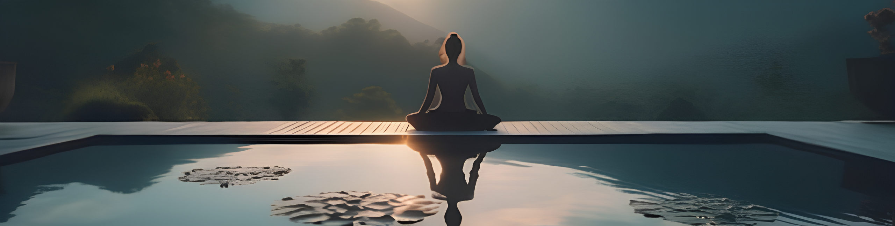
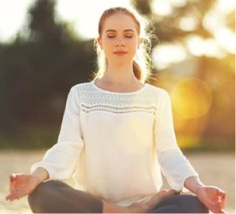
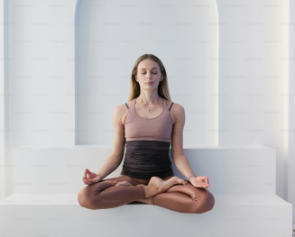

Welcome to HealthyU, your ultimate destination for all things health and wellness!
Di HealthyU, kami percaya bahwa setiap orang berhak menjalani hidup yang sehat dan memuaskan. Misi kami adalah memberi Anda pengetahuan, alat, dan inspirasi yang Anda perlukan untuk mencapai tujuan kesehatan dan kebugaran Anda. Baik Anda ingin memperbaiki pola makan, mencari rutinitas olahraga baru, atau mengelola stres, kami siap membantu Anda.
Cerita Kami
HealthyU didirikan oleh sekelompok penggemar kesehatan yang ingin menciptakan sumber daya yang andal dan komprehensif bagi orang-orang yang ingin meningkatkan kesejahteraan mereka. Kami memperhatikan bahwa meskipun ada banyak sekali informasi yang tersedia secara online, informasi tersebut bisa sangat banyak dan sering kali saling bertentangan. Itu sebabnya kami memutuskan untuk membuat HealthyU - tempat di mana Anda dapat menemukan informasi tepercaya dan berbasis bukti, semuanya di satu tempat.
Mengapa Memilih HealthyU?
Program Kesehatan Holistik: Kami menawarkan berbagai kegiatan yang dirancang untuk menyelaraskan dengan keindahan alam dan warisan budaya Yogyakarta, termasuk sesi meditasi, kelas Zumba yang menyegarkan, dan latihan kardio yang komprehensif.
Lingkungan yang Tenang: Terletak di tengah lanskap Yogyakarta yang tenang, fasilitas kami menyediakan suasana yang sempurna untuk relaksasi dan penyembuhan. Suasana damai dan pemandangan indah meningkatkan perjalanan kesehatan Anda.
Layanan Kami
Meditasi: Sesi meditasi terpandu untuk membantu Anda menemukan kedamaian batin dan kejernihan mental.
Zumba: Kelas Zumba yang energik dan menyenangkan yang mempromosikan kebugaran dan kegembiraan.
Kegiatan Kardio: Program kardio komprehensif yang dirancang untuk meningkatkan kesehatan kardiovaskular dan kebugaran keseluruhan.


Komitmen Kami
Di HealthyU, kesehatan dan kebahagiaan Anda adalah prioritas utama kami. Kami berkomitmen untuk menciptakan lingkungan yang mendukung di mana Anda dapat menemukan kembali keseimbangan dan kepuasan. Biarkan semangat Yogyakarta menginspirasi Anda menuju kehidupan yang lebih seimbang dan terpenuhi.